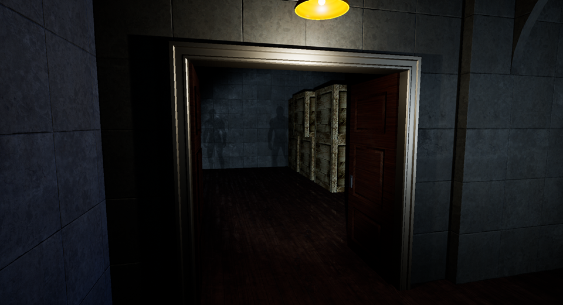
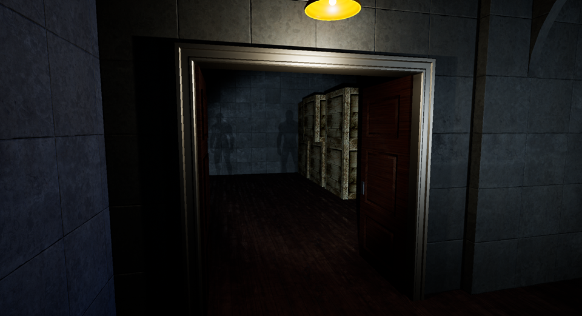

Doghouse
2023 - Present
"A boy searches for his lost dog."
A first-person survival horror game inspired by late 90s consoles, when the limitations of 3D birthed the best and scariest games from our childhoods.
This game is being co-created with Andrew Vien. It's our first large project in Unreal Engine 5, serving as a workshop of ideas and interesting mechanics as we learn the engine.
Genre: First-Person Survival Horror
Team Size: 2
Tools Used: UE5, C++/Blueprints, Blender, Reaper
Status: In Development [Playable Demo]
Roles and Responsibilities
Programming and AI
- Designed a variety of enemy AIs that dynamically react to light – both static and player-caused – using behavior trees and environmental query systems
- Built a system for environmental storytelling, using C++ to create placeable blueprints that interact with other systems such as lighting, AI, and SFX
Level Design
- Designed, greyboxed, and implemented the starting level
- Modeled and textured low-poly assets using Blender
- Implemented lo-fi post-processing VFX
- Designed and mixed ambience and sound FX in Reaper


 
